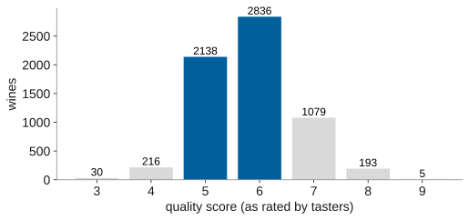
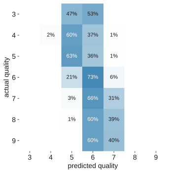

name: title layout: true class: cover --- count: false .section-mark.center[ ## Beyond two classes <br /> Oscar Esteban <<code>oscar.esteban@hevs.ch</code>> <br /> EAD · Exploration avancée de données et intelligence décisionnelle · 16.10.2026 ] ??? --- name: newsection layout: true .perma-sidebar[ <p class="rotate"> <a rel="license" href="http://creativecommons.org/licenses/by/4.0/"><img alt="Creative Commons License" style="border-width:0; height: 20px; padding-top: 6px;" src="https://i.creativecommons.org/l/by/4.0/88x31.png" /></a> <span style="padding-left: 10px; font-weight: 600;">Beyond two classes (16.10.2026)</span> </p> ] --- .section-mark[ # From two classes to many ] --- # Seven quality grades, and two of them hold three wines in four .boxed-content.center[ <p></p> ] .footnote[Wine Quality (Cortez et al. 2009, UCI, CC BY 4.0): 6,497 Portuguese red and white wines, 11 lab measurements, a taster's score.] ??? --- # Remove the duplicates before anything else .cards.cols-2[ .card.alert[ .kicker[in the file] .metric[1,177] rows are exact copies of another row (18%). ] .card[ .kicker[same model, 5-fold accuracy] .metric[0.67 → 0.58] with the copies, then without them. ] ] .large.center[A copy in training and its twin in the test fold: the model is graded on rows it has already seen.] ??? --- # The confusion matrix grows to N × N .pull-left[ <p></p> ] .pull-right.large[ <br /> Read **rows**: each one is an actual grade, split by what the model predicted. <br /> Most wines are predicted 5 or 6, whatever their grade. ] .footnote[Deduplicated data, random forest, 5-fold, scikit-learn. Row percentages.] ??? --- # Each class gets its own precision and recall .data-table.center[ | actual grade | 3 | 4 | 5 | 6 | 7 | 8 | 9 | |---|---|---|---|---|---|---|---| | wines | 30 | 206 | 1,752 | 2,323 | 856 | 148 | 5 | | recall | 0.00 | 0.02 | **0.63** | **0.73** | 0.31 | 0.00 | 0.00 | ] .large.center[*One-vs-rest*: each grade in turn is the positive class, all the others the negative. Everything from this morning applies, once per class.] ??? --- # One score for the whole model hides a choice .data-table.center[ | average | how | here | |---|---|---| | **micro** (= accuracy) | pool every decision | 0.58 | | **weighted** F1 | per-class F1, weighted by class size | 0.55 | | **macro** F1 | per-class F1, every class counts the same | **0.24** | | baseline | always say "6" | 0.44 accuracy | ] .large.center[Rare grades that matter (the 9s you sell at a premium) only show up in **macro**.] ??? --- # Hands-on 3: grade the wines .steps[ 1. Upload `winequality_all.csv` to a new project. 2. Remove the duplicates: visual recipe **Distinct**. 3. On the distinct dataset: **Lab → AutoML prediction**, target `quality`. 4. **Design → Target**: set the prediction type to **multiclass classification**. 5. **Design → Train/Test set**: K-fold cross-test, 5 folds, stratified. Train. 6. **Results**: open the confusion matrix. Which grades are never predicted? ] ??? --- # Hands-on 3, continued: three grades instead of seven .steps[ <ol start="7"> <li>Prepare recipe, Formula: <code>if(quality <= 5, "low", if(quality == 6, "medium", "high"))</code> into a column <code>grade</code>.</li> <li>New AutoML prediction on <code>grade</code>, same settings. Train.</li> <li>Look at the scores.</li> </ol> ] .admonition.question[ <i class="fa-solid fa-circle-question"></i> Every algorithm now scores 1.000. What happened? ] ??? --- # The old target was still a feature .boxed-content.large[ `quality` is still in the dataset, and Dataiku uses every column as an input by default. From `quality` the model reads `grade` back exactly. **Design → Features handling**: reject `quality`, and train again. ] .large.center[Re-encoding the target is the commonest leak of all.] ??? --- # Quality is ordered: say so in the model .cards.cols-3.vcenter[ .card[ .kicker[as classes] ### Classification Mistaking a 5 for a 6 costs the same as a 3 for a 9. ] .card[ .kicker[as a number] ### Regression Predict 5.7, then round or set thresholds. Keeps the order. ] .card.accent[ .kicker[as a business choice] ### Fewer grades Low / medium / high, cut where the price changes. ] ] ??? --- .section-mark[ # End .large[ Next: *Deep learning for decisions* [<i class="fa-solid fa-circle-left"></i>](../03-cv/index.html) [<i class="fa-solid fa-home"></i>](#1) [<i class="fa-solid fa-circle-right"></i>](../05-dl/index.html) ] ] ???